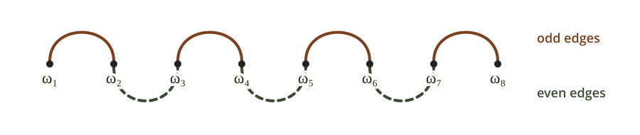

An \(\Omega(n^{-1.6342})\) Lower Bound for (Non-Anytime) Gradient Descent
Introduction
Last week, Ma and Chen proved an \(\Omega(n^{-1.932})\) lower bound for gradient descent (GD) under arbitrary predetermined nonnegative stepsize schedules in smooth convex optimization, and Tsai further improved it to \(\Omega(n^{-1.7321})\) (see his blog post). After multiple rounds of interaction with ChatGPT-5.6 Sol, I obtained the lower bound \(\Omega(n^{-1.6342})\).
In the proof, we use the same hard-function family introduced by Ma and Chen. Tsai's blog post gives an insightful explanation of this construction (cf. Tsai's Lemma 6). Our improvement begins after that construction. We estimate the resulting sequence inequality more precisely through term-by-term control of selected long steps instead of compressing those steps into a harmonic mean (cf. Tsai's Lemma 7).
AI Disclosure. This improvement was developed through multiple rounds of interaction with ChatGPT-5.6 Sol. The generated proof was disorganized and difficult to follow. I simplified and rewrote the mathematical presentation.
Problem Setup
Let \(\mathcal F_1(\mathbb R^d)\) be the class of convex \(1\)-smooth functions on \(\mathbb R^d\) whose sets of minimizers are nonempty. Given an integer iteration horizon \(n\ge1\), an initial point \(x_1\in\mathbb R^d\), and a predetermined schedule \(H=(h_1,\ldots,h_n)\in(0,\infty)^n\), GD generates \[ x_{k+1}=x_k-h_k\nabla f(x_k),\qquad 1\le k\le n. \] The schedule may depend on \(n\), but not on \(f\).
Define the worst-case convergence rate by \[ R_n(H):= \sup_{d\in\mathbb N} \sup_{f\in\mathcal F_1(\mathbb R^d)} \sup_{x^\star\in\arg\min f} \sup_{x_1\in\mathbb R^d\setminus\{x^\star\}} \frac{f(x_{n+1})-f(x^\star)} {\frac12\lVert x_1-x^\star\rVert^2}. \]
Our target. Improve Tsai's lower bound \(R_n(H)=\Omega(n^{-1.7321})\) and bring its exponent as close as possible to the \(O(n^{-\log_2(1+\sqrt{2})})\) upper bound of Altschuler and Parrilo.
Main Results
Theorem 1. (Tsai) There exists a universal constant \(c>0\) such that, for every integer \(n\ge1\) and every \(H\in(0,\infty)^n\), \(R_n(H)\ge c n^{-1.7321}\).
We prove the following.
Theorem 2 (Main result). There exists a universal constant \(c>0\) such that, for every integer \(n\ge1\) and every \(H\in(0,\infty)^n\), \(R_n(H)\ge c n^{-1.6342}\).
A schematic diagram with rate markers n to the powers minus 2, minus 1.932, minus 1.733, minus 1.6342, minus 1.271, and minus 1. The lower-bound blocks are labeled Nemirovsky and Yudin, Ma and Chen, Tsai, and This work. The upper-bound blocks are labeled Altschuler and Parrilo, and Levitin and Polyak. The horizontal axis is labeled Lower bound on the left and Upper bound on the right.
Up to Lemma 2, we use the hard-function construction of Ma and Chen without modification. This construction gives the product-form lower bound below. Using Tsai's notation, write \(h_{a:b}:=\sum_{k=a}^b h_k\), with an empty sum equal to zero. For an integer \(1\le m\le n\), choose \[ 0<t_1<\cdots<t_m\le n, \qquad h_{t_i}>1, \] set \(t_0=0\), \(t_{m+1}=n+1\), and define \[ S_i:=h_{t_{i-1}+1:t_i-1}, \qquad 1\le i\le m+1. \]
Lemma 2. (cf. Ma and Chen, Theorem 4.1 and Tsai, Lemma 6). For every such selection,
\[ R_n(H)\ge \frac{1}{S_m+h_{t_m}+2S_{m+1}+1} \prod_{i=1}^{m-1} \frac{S_{i+1}+h_{t_{i+1}}} {S_i+h_{t_i}+S_{i+1}+h_{t_{i+1}}} \prod_{i=1}^{m}\frac{h_{t_i}-1}{S_i+1}. \tag{1}\label{eq:hard-product} \]Lemma 2 completes the hard-function construction. From this point on, the rest of the proof amounts to a sequence inequality for the right-hand side of \(\eqref{eq:hard-product}\). Tsai treats the selected long steps collectively through a harmonic mean (cf. Tsai's Lemma 7) and a counting function (cf. Tsai's Lemma 8), which loses information about their individual sizes and chronological pairings. To obtain a sharper estimate, we retain every factor coupling two consecutive selected long steps (Lemma 3) and apply sharper term-by-term estimates (Lemma 4 and Lemma 6).
The equivalent sequence problem
Lemma 3 (Clean sequence problem). Fix \(\alpha>0\), so the target rate exponent is \(1+\alpha\). For \(w,z,x,y>0\), define
\[ K_{w,z}(x,y):= \frac{\sqrt{xy}\,(w+z+x+y)}{\sqrt{wz(w+x)(z+y)}} \tag{2}\label{eq:kernel} . \]To prove \(R_n(H)\ge c_\alpha(n+1)^{-(1+\alpha)}\) for every \(n\) and \(H\), it is enough to find a constant \(C_\alpha<\infty\), depending only on \(\alpha\), such that the following holds for every integer \(q\ge2\). Given positive sequences \(x_1,\ldots,x_q\) and \(\omega_1,\ldots,\omega_q\), write \(\omega_1^\downarrow\ge\cdots\ge\omega_q^\downarrow\) for the decreasing rearrangement of \((\omega_i)\). If
\[ \sum_{i=1}^q x_i<q, \qquad \sum_{s=m+1}^q \omega_s^\downarrow \ge q\left[\left(\frac qm\right)^\alpha-1\right], \qquad 1\le m<q. \tag{3}\label{eq:sequence-constraints} \]then
\[ E_{\mathrm{end}} \prod_{i=1}^{q-1}K_{\omega_i,\omega_{i+1}}(x_i,x_{i+1}) \le C_\alpha, \tag{4}\label{eq:sequence-bound} \]where
\[ E_{\mathrm{end}}:= \sqrt{x_1x_q}\sqrt{\frac{1+x_1/\omega_1}{1+x_q/\omega_q}} \left[1+\frac{x_q+2\left(q-\sum_{i=1}^q x_i\right)}{\omega_q}\right]. \tag{5}\label{eq:endpoint-factor} \]Proof sketch
Suppose \(\eqref{eq:sequence-constraints}\) implies \(\eqref{eq:sequence-bound}\) with a constant \(C_\alpha\) uniform over \(q\ge2\). Fix \(n\ge1\) and a schedule \(H=(h_1,\ldots,h_n)\). Let \(r:=\#\{k:h_k>1\}\) and \(B:=1+\sum_{k=1}^n\min\{h_k,1\}\).
Case 1: \(r\ge1\). List the positive numbers \(h_k-1\) as \(a_1\ge\cdots\ge a_r>0\), and define \(D_s:=B+\sum_{\ell=s+1}^r a_\ell\) for \(1\le s\le r\). Then \(1+\sum_{k=1}^n h_k=B+\sum_{\ell=1}^r a_\ell\) and \(D_r=B\). Choose \[ q\in\operatorname*{arg\,min}_{1\le s\le r}D_s s^\alpha. \] Thus \(D_q q^\alpha\le D_s s^\alpha\) for every \(1\le s\le r\).
We first treat the general case \(q\ge2\), which is the case where condition \(\eqref{eq:sequence-constraints}\) is needed.
Case 1a: \(q\ge2\). Let \(t_1<\cdots<t_q\) be the indices of the \(q\) largest positive excesses \(h_k-1\), with ties broken arbitrarily. With \(S_1,\ldots,S_{q+1}\) defined as in Lemma 2, let \(U_i:=S_i+1\) for \(1\le i\le q\), and let \(V:=S_{q+1}+1\). The intervals defining \(S_1,\ldots,S_{q+1}\) partition the indices not among \(t_1,\ldots,t_q\). Therefore \[ \sum_{i=1}^qU_i+V =q+1+\sum_{k\notin\{t_1,\ldots,t_q\}}h_k =D_q. \] Define \[ \bar U:=\frac{D_q}{q}, \qquad x_i:=\frac{U_i}{\bar U}, \qquad \omega_i:=\frac{h_{t_i}-1}{\bar U}, \qquad 1\le i\le q. \] Then \[ \sum_{i=1}^q x_i =\frac{D_q-V}{\bar U} =q-\frac{V}{\bar U} <q. \] Moreover, \(\omega_s^\downarrow=a_s/\bar U\) for \(1\le s\le q\). For every \(1\le m<q\), the minimizing property of \(q\), namely \(D_q q^\alpha\le D_m m^\alpha\), gives \[ 1+\frac1q\sum_{s=m+1}^q\omega_s^\downarrow =1+\frac{\sum_{s=m+1}^q a_s}{D_q} =\frac{D_m}{D_q} \ge\left(\frac qm\right)^\alpha. \] Thus \(x_i,\omega_i\) satisfy \(\eqref{eq:sequence-constraints}\).
Let \(G\) be the right-hand side of \(\eqref{eq:hard-product}\), with \(m=q\) and the indices chosen above. Lemma 2 gives \(R_n(H)\ge G\), and substitution yields \[ G^{-1} =\bar U\sqrt{x_1x_q} \sqrt{\frac{1+x_1/\omega_1}{1+x_q/\omega_q}} \left[ 1+\frac{x_q+2(q-\sum_{i=1}^q x_i)-\bar U^{-1}}{\omega_q} \right] \prod_{i=1}^{q-1} K_{\omega_i,\omega_{i+1}}(x_i,x_{i+1}). \] The bracket is positive, since \[ 1+\frac{x_q+2(q-\sum_{i=1}^q x_i)-\bar U^{-1}}{\omega_q} =\frac{U_q+(h_{t_q}-1)+2V-1}{h_{t_q}-1}>0. \] Replacing \(-\bar U^{-1}\) by \(0\) increases the bracket. Therefore \(\eqref{eq:sequence-bound}\) gives \[ G^{-1} \le \bar U E_{\mathrm{end}} \prod_{i=1}^{q-1}K_{\omega_i,\omega_{i+1}}(x_i,x_{i+1}) \le\bar U C_\alpha=\frac{D_q}{q}C_\alpha, \qquad R_n(H)\ge G\ge\frac{q}{C_\alpha D_q}. \] Since \(D_q q^\alpha\le D_r r^\alpha=Br^\alpha\), we obtain \[ R_n(H) \ge\frac{q}{C_\alpha D_q} \ge\frac{q^{1+\alpha}}{C_\alpha Br^\alpha} \ge\frac1{C_\alpha B(r+1)^\alpha}. \]
It remains to treat the boundary cases outside Case 1a. For these cases, we use the following Huber loss to construct a lower bound.
Set \(\delta:=(1+2\sum_{k=1}^n h_k)^{-1}\), and consider the one-dimensional convex, \(1\)-smooth Huber function \[ f_\delta(x):= \begin{cases} x^2/2,& |x|\le\delta,\\ \delta|x|-\delta^2/2,& |x|>\delta. \end{cases} \] Let \(\xi_1,\ldots,\xi_{n+1}\) be the GD iterates on \(f_\delta\) generated by \(H\), with \(\xi_1:=1\) and \(\xi_{k+1}:=\xi_k-h_k f_\delta'(\xi_k)\) for \(1\le k\le n\). An induction gives \[ \xi_k =1-\delta\sum_{j=1}^{k-1}h_j \ge 1-\delta\sum_{j=1}^n h_j >\delta, \qquad 1\le k\le n+1. \] Hence every iterate lies on the positive affine branch, where \(f_\delta'=\delta\). The minimizer is \(0\), and the choice of \(\delta\) gives \(R_n(H)\ge2f_\delta(\xi_{n+1})=\delta\).
Case 1b: \(q=1\). Since \(D_1+a_1=1+\sum_{k=1}^n h_k\), the Huber bound gives \(R_n(H)\ge[2(D_1+a_1)-1]^{-1}\). If \(a_1\le D_1\), this is at least \(1/(4D_1)\). If \(a_1>D_1\), choose an index \(t\) with \(h_t-1=a_1\), and apply Lemma 2 with \(m=1\) and \(t_1=t\). Write \(U_1:=S_1+1\) and \(V:=S_2+1\). Then \(D_1=U_1+V\), \(U_1\le D_1\), and \(U_1+a_1+2V-1<a_1+2D_1<3a_1\). Lemma 2 therefore gives \[ R_n(H)\ge \frac{a_1}{U_1(U_1+a_1+2V-1)} >\frac1{3U_1} \ge\frac1{3D_1} >\frac1{4D_1}. \] Thus \(R_n(H)\ge1/(4D_1)\) in either subcase. Using the minimizing property with \(s=r\), we obtain \(D_1\le D_r r^\alpha=Br^\alpha\), and hence \[ R_n(H)\ge\frac1{4B(r+1)^\alpha}. \]
Case 2: \(r=0\). Here \(h_k\le1\) for every \(k\), so \(B=1+\sum_{k=1}^n h_k\) and \(\delta=(2B-1)^{-1}\). The Huber bound gives \(R_n(H)\ge(2B-1)^{-1}\ge(2B)^{-1}\).
Since \(B\le n+1\) and \(r+1\le n+1\), these estimates give \[ R_n(H)\ge c_\alpha(n+1)^{-(1+\alpha)}, \qquad c_\alpha:=\min\{C_\alpha^{-1},1/4\}. \]
Eliminating the variables \(x_i\)
To make \(\eqref{eq:sequence-bound}\) more tractable, we first eliminate the variables \(x_i\). For a parameter \(\lambda>0\), to be chosen later, define \[ \Gamma_\lambda(w,z) := \sup_{x,y>0} \left\{ \log K_{w,z}(x,y)-\lambda(x+y) \right\}. \tag{6}\label{eq:gamma-definition} \] By definition, for every \(w,z,x,y>0\), \[ \log K_{w,z}(x,y) \le \lambda(x+y)+\Gamma_\lambda(w,z). \tag{7}\label{eq:gamma-envelope} \] Lemma 4 applies \(\eqref{eq:gamma-envelope}\) to the \(q-1\) consecutive pairs and uses the budget \(\sum_{i=1}^q x_i<q\) to absorb the endpoint factor.
Lemma 4. Fix \(\alpha,\lambda>0\). There is a constant \(C_{\alpha,\lambda}<\infty\) such that, for every integer \(q\ge2\), every pair of positive sequences \((x_i)_{i=1}^q\) and \((\omega_i)_{i=1}^q\) satisfying \(\eqref{eq:sequence-constraints}\) obeys
\[ E_{\mathrm{end}} \prod_{i=1}^{q-1}K_{\omega_i,\omega_{i+1}}(x_i,x_{i+1}) \le C_{\alpha,\lambda} \exp\!\left\{ 2\lambda q+ \sum_{i=1}^{q-1}\Gamma_\lambda(\omega_i,\omega_{i+1}) \right\}. \tag{8}\label{eq:envelope-reduction} \]Proof sketch
Set \(\Delta:=q-\sum_{i=1}^q x_i>0\). Applying \(\eqref{eq:gamma-envelope}\) to every consecutive pair gives \[ \log\prod_{i=1}^{q-1} K_{\omega_i,\omega_{i+1}}(x_i,x_{i+1}) \le \lambda\sum_{i=1}^{q-1}(x_i+x_{i+1}) +\sum_{i=1}^{q-1}\Gamma_\lambda(\omega_i,\omega_{i+1}). \] Here \(\sum_{i=1}^{q-1}(x_i+x_{i+1}) =2\sum_{i=1}^q x_i-x_1-x_q=2q-(2\Delta+x_1+x_q)\). Therefore \[ \begin{aligned} E_{\mathrm{end}} \prod_{i=1}^{q-1}K_{\omega_i,\omega_{i+1}}(x_i,x_{i+1}) &\le \exp\!\left\{ 2\lambda q+ \sum_{i=1}^{q-1}\Gamma_\lambda(\omega_i,\omega_{i+1}) \right\}\\ &\qquad{}\times E_{\mathrm{end}}e^{-\lambda(2\Delta+x_1+x_q)}. \end{aligned} \] It remains to bound the last factor independently of \(q\) and the two sequences.
Taking \(m=q-1\) in \(\eqref{eq:sequence-constraints}\) yields \[ \min_{1\le i\le q}\omega_i =\omega_q^\downarrow \ge q\left[\left(\frac q{q-1}\right)^\alpha-1\right] \ge\alpha q\log\frac q{q-1} \ge\alpha. \] Here the last two inequalities use \(e^u-1\ge u\) and \(\log(1+t)\ge t/(1+t)\). In particular, \(\omega_1,\omega_q\ge\alpha\). Using this in \(\eqref{eq:endpoint-factor}\) and writing \(T:=x_1+x_q+\Delta\), we directly obtain \[ E_{\mathrm{end}}e^{-\lambda(2\Delta+x_1+x_q)} \le C_\alpha(1+T)^{5/2}e^{-\lambda T} \le C_\alpha\sup_{t\ge0}(1+t)^{5/2}e^{-\lambda t} =:C_{\alpha,\lambda}<\infty. \] This proves \(\eqref{eq:envelope-reduction}\).
Basic properties of \(\Gamma_\lambda\)
Lemma 5. For every \(\lambda>0\), \(\Gamma_\lambda\) has the following properties.
(1) Smoothness. For every \(w,z>0\), the supremum in \(\eqref{eq:gamma-definition}\) is attained at a unique pair \((x_\lambda(w,z),y_\lambda(w,z))\in(0,\infty)^2\). The optimizer map \((w,z)\mapsto(x_\lambda(w,z),y_\lambda(w,z))\) and \(\Gamma_\lambda\) are \(C^\infty\) on \((0,\infty)^2\).
(2) Symmetry. \(\Gamma_\lambda(w,z)=\Gamma_\lambda(z,w)\).
(3) Joint convexity. The map \((w,z)\mapsto\Gamma_\lambda(w,z)\) is jointly convex on \((0,\infty)^2\).
(4) Decreasing in each coordinate. \(\Gamma_\lambda\) is strictly decreasing in each coordinate.
(5) Strict submodularity. \[ \partial_{wz}^2\Gamma_\lambda(w,z)<0. \tag{9}\label{eq:submodularity} \]
Proof sketch
(1) Smoothness. Let \(F_{w,z}(x,y):=\log K_{w,z}(x,y)-\lambda(x+y)\). For fixed \(w,z>0\), \(F_{w,z}(x,y)\to-\infty\) as \(x\downarrow0\), \(y\downarrow0\), or \(x+y\to\infty\). Hence it attains its maximum at an interior point. Write \(A:=w+x\), \(B:=z+y\), and \(\Sigma:=A+B\). For every nonzero direction \((a,b)\), \[ D^2_{x,y}F_{w,z}[(a,b)]^2 =-\frac{a^2}{2x^2}-\frac{b^2}{2y^2} -\frac{(a+b)^2}{\Sigma^2} +\frac{a^2}{2A^2}+\frac{b^2}{2B^2}<0. \] Thus the maximizer is unique. It satisfies the first-order condition \(\nabla_{x,y}F_{w,z}=0\), whose Jacobian in \((x,y)\) is the invertible Hessian above. The implicit function theorem gives a local \(C^\infty\) optimizer map. Uniqueness makes these local maps agree, so \((w,z)\mapsto(x_\lambda(w,z),y_\lambda(w,z))\) is \(C^\infty\) on \((0,\infty)^2\). Substitution into \(F_{w,z}\) proves the same for \(\Gamma_\lambda\).
(2) Symmetry. The definition \(\eqref{eq:gamma-definition}\) is invariant under \((w,x)\leftrightarrow(z,y)\), which proves Property (2).
(3) Joint convexity. For fixed \(x,y\), put \(A:=w+x\) and \(B:=z+y\). The Hessian in \((w,z)\) has quadratic form \[ \frac{a^2}{2w^2}+\frac{a^2}{2A^2} +\frac{b^2}{2z^2}+\frac{b^2}{2B^2} -\frac{(a+b)^2}{(A+B)^2}\ge0. \] The first four terms dominate \(a^2/A^2+b^2/B^2\), which is at least \((a+b)^2/(A+B)^2\) by Cauchy–Schwarz. Taking the supremum in \(\eqref{eq:gamma-definition}\) preserves convexity, proving Property (3).
(4) Decreasing in each coordinate. Write \(x_\ast:=x_\lambda(w,z)\), \(y_\ast:=y_\lambda(w,z)\), and set \(A:=w+x_\ast\), \(B:=z+y_\ast\), and \(\Sigma:=A+B\). The chain rule and the first-order conditions give \[ \begin{aligned} \partial_w\Gamma_\lambda &=\partial_wF_{w,z} +\partial_xF_{w,z}\,\partial_wx_\ast +\partial_yF_{w,z}\,\partial_wy_\ast\\ &=\partial_wF_{w,z} =\frac1\Sigma-\frac1{2w}-\frac1{2A}. \end{aligned} \] Equivalently, \[ -\partial_w\Gamma_\lambda =\frac{x_\ast}{2wA}+\frac{B}{A\Sigma}>0, \] and similarly in \(z\). This proves Property (4).
(5) Strict submodularity. With the notation from Property (4), the first-order conditions imply \[ \lambda-\frac1\Sigma =\frac{w}{2x_\ast A} =\frac{z}{2y_\ast B}. \] Hence \[ \tau_\ast:=\frac{x_\ast A}{w} =\frac{y_\ast B}{z}>0. \] For \(u>0\), define \[ A_u(\tau):=\frac{u+\sqrt{u^2+4u\tau}}2. \] Then \(A=A_w(\tau_\ast)\), \(B=A_z(\tau_\ast)\), and \[ g(\tau_\ast;w,z)=0, \qquad g(\tau;w,z):= \frac1{2\tau}+\frac1{A_w(\tau)+A_z(\tau)}-\lambda. \] The explicit formula for \(A_u\) shows that it increases in both \(u\) and \(\tau\). Therefore \(\partial_\tau g<0\), \(\partial_zg<0\), and \(\partial_z\tau_\ast=-(\partial_zg)/(\partial_\tau g)<0\). Moreover, \[ \Sigma=\left(\lambda-\frac1{2\tau_\ast}\right)^{-1}, \qquad A=A_w(\tau_\ast). \] Since \(d\Sigma/d\tau=-\Sigma^2/(2\tau^2)<0\), we have \(\partial_z\Sigma>0\) and \(\partial_z A=A_w'(\tau_\ast)\partial_z\tau_\ast<0\). Differentiating the formula for \(\partial_w\Gamma_\lambda\) gives \[ \partial_{wz}^2\Gamma_\lambda = -\frac{\partial_z\Sigma}{\Sigma^2} +\frac{\partial_z A}{2A^2}<0, \] proving Property (5).
Upper bounding \(\sum_{i=1}^{q-1}\Gamma_\lambda(\omega_i,\omega_{i+1})\)
Recall from Lemma 3 that \(\omega_1^\downarrow\ge\cdots\ge\omega_q^\downarrow\) is the decreasing rearrangement of \(\omega_1,\ldots,\omega_q\).
For a positive vector \(v=(v_1,\ldots,v_N)\) and \(0\le k\le\lfloor N/2\rfloor\), let \(\mathcal M_k(N)\) be the set of all collections of \(k\) disjoint unordered pairs from \(\{1,\ldots,N\}\). Define \[ \Phi_{k,\lambda}(v_1,\ldots,v_N) := \max_{M\in\mathcal M_k(N)} \sum_{\{a,b\}\in M}\Gamma_\lambda(v_a,v_b). \] Thus \(\Phi_{k,\lambda}(v)\) is the maximum sum over all collections of \(k\) disjoint pairs of coordinates of \(v\). We set \(\Phi_{0,\lambda}=0\).
Splitting the terms in \(\sum_{i=1}^{q-1}\Gamma_\lambda(\omega_i,\omega_{i+1})\) according to whether \(i\) is odd or even gives two matchings.

Set \(k_q:=\lfloor(q-1)/2\rfloor\). By the coordinatewise-decreasing property in Lemma 5(4), \(\Gamma_\lambda(\omega_i,\omega_j)\le\Gamma_\lambda(\alpha,\alpha)\), since \(\eqref{eq:sequence-constraints}\) with \(m=q-1\) gives \(\omega_i,\omega_j\ge\alpha\). Splitting the sum into these two matchings and treating the one possible deleted pair with the bound above gives \[ \sum_{i=1}^{q-1}\Gamma_\lambda(\omega_i,\omega_{i+1}) \le 2\Phi_{k_q,\lambda} (\omega_q^\downarrow,\ldots,\omega_2^\downarrow) +C_{\alpha,\lambda}. \tag{10}\label{eq:parity-bound} \] See the proof sketch for details.
We now bound \(\Phi_{k_q,\lambda}\) through two finer reductions, using the properties of \(\Gamma_\lambda\) established in Lemma 5.
Step 1. Majorization
For \(2\le s\le q\), define
\[ \bar w_s^{(q)} := q^{1+\alpha}\bigl((s-1)^{-\alpha}-s^{-\alpha}\bigr), \qquad 2\le s\le q. \tag{11}\label{eq:reference-weights} \]Their tails satisfy \[ \sum_{s=m+1}^q\bar w_s^{(q)} =q\left[\left(\frac qm\right)^\alpha-1\right]. \] Together with \(\eqref{eq:sequence-constraints}\), this gives \[ \sum_{s=m+1}^q\omega_s^\downarrow \ge \sum_{s=m+1}^q\bar w_s^{(q)}, \qquad 1\le m<q. \] Because \(\Gamma_\lambda\) is symmetric, jointly convex, and coordinatewise decreasing (Lemma 5), the function \(\Phi_{k,\lambda}\) is symmetric, convex, and coordinatewise decreasing as well. The tail comparison above therefore gives \[ \Phi_{k_q,\lambda} (\omega_q^\downarrow,\ldots,\omega_2^\downarrow) \le \Phi_{k_q,\lambda} (\bar w_q^{(q)},\ldots,\bar w_2^{(q)}). \]
Step 2. Identify the maximizing pairing
Let \(0<v_1\le\cdots\le v_N\) and \(0\le k\le\lfloor N/2\rfloor\). Since \(\Gamma_\lambda\) decreases in each coordinate, a maximizing matching in \(\Phi_{k,\lambda}(v)\) may be chosen to use the \(2k\) smallest entries. Symmetry and strict submodularity imply that a maximizing matching pairs \(v_j\) with \(v_{2k+1-j}\). \[ \Phi_{k,\lambda}(v_1,\ldots,v_N) = \sum_{j=1}^k \Gamma_\lambda(v_j,v_{2k+1-j}). \tag{12}\label{eq:maximizing-pairing} \] The numbers in \(\eqref{eq:reference-weights}\) satisfy \(\bar w_q^{(q)}\le\cdots\le\bar w_2^{(q)}\), so \(\eqref{eq:maximizing-pairing}\) applies directly to \((\bar w_q^{(q)},\ldots,\bar w_2^{(q)})\). In particular,
\[ \Phi_{k_q,\lambda}(\bar w_q^{(q)},\ldots,\bar w_2^{(q)}) =\sum_{j=1}^{k_q} \Gamma_\lambda(\bar w_{q+1-j}^{(q)},\bar w_{q-2k_q+j}^{(q)}). \]By the mean value theorem, for every \(2\le s\le q\), there is \(\theta_s\in(s-1,s)\) such that
\[ \bar w_s^{(q)}=W_\alpha(\theta_s/q), \qquad W_\alpha(t):=\alpha t^{-1-\alpha},\quad 0<t\le1. \tag{13}\label{eq:mean-value-profile} \]As shown in the proof of Lemma 6, the integrand extends continuously to \(t=0\). Each point \(\theta_s/q\) in \(\eqref{eq:mean-value-profile}\) is within \(1/q\) of the relevant grid point. The Lipschitz estimate makes the sum of all these displacements bounded independently of \(q\). The intervals left outside the grid have total length \(O(1/q)\), so after multiplication by \(q\) they also contribute only a bounded amount. Therefore
\[ \Phi_{k_q,\lambda} (\bar w_q^{(q)},\ldots,\bar w_2^{(q)}) \le q\int_0^{1/2} \Gamma_\lambda\bigl(W_\alpha(t),W_\alpha(1-t)\bigr)\,dt +C_{\alpha,\lambda}. \]Combining this estimate with \(\eqref{eq:parity-bound}\) gives the following lemma.
Lemma 6. Fix \(\alpha,\lambda>0\). There is a constant \(C_{\alpha,\lambda}<\infty\) such that, for every integer \(q\ge2\) and every positive sequence \(\omega_1,\ldots,\omega_q\) satisfying the tail condition in \(\eqref{eq:sequence-constraints}\),
\[ \sum_{i=1}^{q-1}\Gamma_\lambda(\omega_i,\omega_{i+1}) \le 2q\int_0^{1/2} \Gamma_\lambda\bigl(W_\alpha(t),W_\alpha(1-t)\bigr)\,dt +C_{\alpha,\lambda}. \tag{14}\label{eq:path-estimate} \]Proof sketch
(1) Proof of \(\eqref{eq:parity-bound}\). We treat odd and even \(q\) separately. Put \(k_q=\lfloor(q-1)/2\rfloor\), and choose an index \(i_\star\) such that \(\omega_{i_\star}=\omega_1^\downarrow\). If \(q\) is odd, each parity matching has \(k_q\) pairs and leaves one index unused. If \(i_\star\) is matched, replace it by the unused index. The unused coordinate has no larger value, so Lemma 5(4) shows that the sum cannot decrease.
If \(q\) is even, the same replacement applies to the matching with \(k_q\) pairs. The other matching is perfect. Delete its unique pair containing \(i_\star\). Each remaining matching then has \(k_q\) pairs drawn from \((\omega_q^\downarrow,\ldots,\omega_2^\downarrow)\), and is therefore bounded by \(\Phi_{k_q,\lambda}(\omega_q^\downarrow,\ldots,\omega_2^\downarrow)\). Taking \(m=q-1\) in \(\eqref{eq:sequence-constraints}\) gives \[ \omega_q^\downarrow \ge q\left[\left(\frac q{q-1}\right)^\alpha-1\right] \ge q\alpha\log\frac q{q-1}\ge\alpha, \] where the last step uses \(\log(1+t)\ge t/(1+t)\). Hence every \(\omega_i\ge\alpha\), and Lemma 5(4) gives \(\Gamma_\lambda(\omega_i,\omega_j)\le \Gamma_\lambda(\alpha,\alpha)\). In particular, the pair deleted in the even case is bounded by \(\max\{0,\Gamma_\lambda(\alpha,\alpha)\}\). This proves \(\eqref{eq:parity-bound}\).
(2) Proof of Step 1. Majorization. For a fixed matching, the sum of its \(\Gamma_\lambda\)-terms is convex and coordinatewise decreasing. Taking the maximum over all matchings preserves both properties, and permuting the coordinates only permutes the matchings. Hence \(\Phi_{k,\lambda}\) is symmetric, convex, and coordinatewise decreasing.
Lemma 6.1. Let \(F:(0,\infty)^N\to\mathbb R\) be symmetric, convex, and coordinatewise decreasing. If \(a_1\le\cdots\le a_N\), \(b_1\le\cdots\le b_N\), and \(\sum_{i=1}^{\ell}a_i\ge\sum_{i=1}^{\ell}b_i\) for every \(1\le\ell\le N\), then \(F(a)\le F(b)\).
Proof. In the application below, \(F=\Phi_{k_q,\lambda}\). Although \(\Gamma_\lambda\) is smooth, \(F\) is a maximum over matchings and need not be differentiable when several matchings tie. Choose a subgradient \(g\in\partial F(a)\), meaning \(F(y)\ge F(a)+g\cdot(y-a)\) for every \(y\). It exists because \(F\) is finite and convex on \((0,\infty)^N\).
Average \(g\) over the permutations that leave \(a\) fixed; the average is still a subgradient at \(a\). Applying its defining inequality after swapping two unequal coordinates of \(a\), and using symmetry of \(F\), gives \(g_1\le\cdots\le g_N\). Coordinatewise decrease gives \(g_i\le0\). With \(D_\ell:=\sum_{i=1}^{\ell}(b_i-a_i)\le0\), summation by parts yields \[ g\cdot(b-a) =g_ND_N+ \sum_{\ell=1}^{N-1}(g_\ell-g_{\ell+1})D_\ell \ge0. \] Thus \(F(b)\ge F(a)+g\cdot(b-a)\ge F(a)\).
We apply Lemma 6.1 to \(F=\Phi_{k_q,\lambda}\). Formula \(\eqref{eq:reference-weights}\) can be written as \(\bar w_s^{(q)}=q^{1+\alpha}\int_{s-1}^{s}\alpha u^{-1-\alpha}\,du\). Since the integrand decreases, \(\bar w_q^{(q)}\le\cdots\le\bar w_2^{(q)}\), and for \(1\le m<q\), \[ \sum_{s=m+1}^q\bar w_s^{(q)} =q^{1+\alpha}\int_m^q\alpha u^{-1-\alpha}\,du =q\left[\left(\frac qm\right)^\alpha-1\right]. \] Setting \(m=q-\ell\) in \(\eqref{eq:sequence-constraints}\) gives, for \(1\le\ell\le q-1\), \[ \sum_{i=1}^{\ell}\omega_{q+1-i}^\downarrow \ge \sum_{i=1}^{\ell}\bar w_{q+1-i}^{(q)}. \] Lemma 6.1, applied to \(a=(\omega_q^\downarrow,\ldots,\omega_2^\downarrow)\) and \(b=(\bar w_q^{(q)},\ldots,\bar w_2^{(q)})\), now gives \[ \Phi_{k_q,\lambda} (\omega_q^\downarrow,\ldots,\omega_2^\downarrow) \le \Phi_{k_q,\lambda} (\bar w_q^{(q)},\ldots,\bar w_2^{(q)}). \]
(3) Proof of Step 2. Identify the maximizing pairing. For \(0<a\le b\le c\le d\), symmetry and strict submodularity give \[ \begin{aligned} \Gamma_\lambda(a,d)+\Gamma_\lambda(b,c) &\ge\Gamma_\lambda(a,c)+\Gamma_\lambda(b,d),\\ \Gamma_\lambda(a,d)+\Gamma_\lambda(b,c) &\ge\Gamma_\lambda(a,b)+\Gamma_\lambda(c,d). \end{aligned} \] Now let \(0<v_1\le\cdots\le v_N\). Because \(\Gamma_\lambda\) decreases in each coordinate, a maximizing matching uses the \(2k\) smallest coordinates. If the smallest selected value \(v_1\) is not paired with the largest selected value \(v_{2k}\), exchange the partners of their two pairs. The two displayed inequalities show that the total cannot decrease. Fix the pair \((v_1,v_{2k})\) and repeat with the remaining values. This gives the pairing in \(\eqref{eq:maximizing-pairing}\).
(4) A uniform Lipschitz bound near \(t=0\). Write \(q=2\ell+1\) or \(q=2\ell\). The paired sum produced by \(\eqref{eq:maximizing-pairing}\) becomes, respectively, \[ \sum_{j=1}^{\ell} \Gamma_\lambda\!\left(\bar w_{j+1}^{(q)},\bar w_{q+1-j}^{(q)}\right), \qquad \sum_{j=1}^{\ell-1} \Gamma_\lambda\!\left(\bar w_{j+2}^{(q)},\bar w_{q+1-j}^{(q)}\right). \] By the mean value theorem, for each \(2\le s\le q\) there is \(\theta_s\in(s-1,s)\) such that \(\bar w_s^{(q)}=W_\alpha(\theta_s/q)\). Define \[ G(t,s):=\Gamma_\lambda(W_\alpha(t),W_\alpha(s)), \qquad 0<t\le\frac12,\quad \frac12\le s\le1. \] We first show that \(G\) remains Lipschitz as \(t\downarrow0\). Put \(w=W_\alpha(t)\), \(z=W_\alpha(s)\), and let \((x_\ast,y_\ast)\) be the optimizer in \(\eqref{eq:gamma-definition}\). Write \(A:=w+x_\ast\), \(B:=z+y_\ast\), and \(\Sigma:=A+B\). The derivative identity from Lemma 5(4) is \[ -\partial_w\Gamma_\lambda =\frac{x_\ast}{2wA}+\frac{B}{A\Sigma}. \] For \(s\in[1/2,1]\), \(\alpha\le z=W_\alpha(s)\le\alpha2^{1+\alpha}\). By Lemma 5, \(A=A_w(\tau_\ast)\) and \(B=A_z(\tau_\ast)\). In particular, \(B\ge\sqrt{z\tau_\ast}\), so the first-order condition gives \[ \lambda \le \frac1{2\tau_\ast}+\frac1{\sqrt{z\tau_\ast}}. \] The right-hand side decreases to \(0\), so this inequality bounds \(\tau_\ast\) above by a constant depending only on \(\alpha,\lambda\). Moreover, \(\tau_\ast=x_\ast(w+x_\ast)/w\ge x_\ast\) and \(\tau_\ast=y_\ast(z+y_\ast)/z\ge y_\ast\). Hence both \(x_\ast\) and \(B=z+y_\ast\) are uniformly bounded. As \(A,\Sigma\ge w\), the derivative identity gives \(-\partial_w\Gamma_\lambda=O_{\alpha,\lambda}(w^{-2})\). Therefore \[ |\partial_tG(t,s)| \le C_{\alpha,\lambda} |W_\alpha'(t)|W_\alpha(t)^{-2} =O_{\alpha,\lambda}(t^\alpha). \] The symmetric derivative formula gives a uniform bound for \(|\partial_sG(t,s)|\), because \(z\), \(W_\alpha'(s)\), and \(\tau_\ast\) are uniformly bounded while \(z\ge\alpha\). Thus both partial derivatives of \(G\) are bounded on the open rectangle, including uniformly as \(t\downarrow0\). Integrating these derivative bounds shows that \(G\) has a bounded Lipschitz extension to \([0,1/2]\times[1/2,1]\).
(5) Compare the finite sum with the integral. Define \(I(t):=G(t,1-t) =\Gamma_\lambda(W_\alpha(t),W_\alpha(1-t))\) for \(0\le t\le1/2\). By part (4), there are finite constants \(L_{\alpha,\lambda}\) and \(M_{\alpha,\lambda}\) such that \[ |G(t,s)-G(t',s')| \le L_{\alpha,\lambda}(|t-t'|+|s-s'|) \] on \([0,1/2]\times[1/2,1]\), while \(|I(t)|\le M_{\alpha,\lambda}\) and \(|I(t)-I(t')|\le L_{\alpha,\lambda}|t-t'|\).
Suppose first that \(q\ge3\). In either parity, the term nearest \(t=1/2\) is \(T_q:=\Gamma_\lambda(\bar w_{\ell+1}^{(q)},\bar w_{\ell+2}^{(q)})\). Formula \(\eqref{eq:mean-value-profile}\) gives \(\theta_{\ell+1}/q,\theta_{\ell+2}/q\in[1/3,1]\), so \(\bar w_{\ell+1}^{(q)},\bar w_{\ell+2}^{(q)} \in[\alpha,\alpha3^{1+\alpha}]\). Lemma 5 therefore gives the uniform bound \[ |T_q| \le \max_{u,v\in[\alpha,\alpha3^{1+\alpha}]} |\Gamma_\lambda(u,v)| =:B_{\alpha,\lambda}<\infty. \]
If \(q=2\ell+1\), separate \(T_q\) and write the remaining sum as \[ S_q= \sum_{j=1}^{\ell-1} G\left(\frac{\theta_{j+1}}q,\frac{\theta_{q+1-j}}q\right). \] Put \(u_j:=j/q\). The locations in \(\eqref{eq:mean-value-profile}\) satisfy \[ \frac{\theta_{j+1}}q \in\left(u_j,u_j+\frac1q\right), \qquad \frac{\theta_{q+1-j}}q \in\left(1-u_j,1-u_j+\frac1q\right). \] Hence \[ \left| S_q-\sum_{j=1}^{\ell-1}I(u_j) \right| \le\frac{2L_{\alpha,\lambda}(\ell-1)}q \le L_{\alpha,\lambda}. \] The intervals \([u_j,u_j+1/q]\) fill \([1/q,\ell/q]\). The uncovered intervals \([0,1/q]\) and \([\ell/q,1/2]\) have total length \(3/(2q)\). Applying the Lipschitz bound on every covered interval gives \[ \left| \sum_{j=1}^{\ell-1}I(u_j) -q\int_0^{1/2}I(t)\,dt \right| \le\frac{L_{\alpha,\lambda}}4 +\frac32M_{\alpha,\lambda}. \]
If \(q=2\ell\), again separate \(T_q\), put \(u_j:=(j+1)/q\), and write \[ S_q= \sum_{j=1}^{\ell-2} G\left(\frac{\theta_{j+2}}q,\frac{\theta_{q+1-j}}q\right). \] Now \[ \frac{\theta_{j+2}}q \in\left(u_j,u_j+\frac1q\right), \qquad \frac{\theta_{q+1-j}}q \in\left(1-u_j+\frac1q,1-u_j+\frac2q\right), \] and therefore \[ \left| S_q-\sum_{j=1}^{\ell-2}I(u_j) \right| \le\frac{3L_{\alpha,\lambda}(\ell-2)}q \le\frac32L_{\alpha,\lambda}. \] The intervals \([u_j,u_j+1/q]\) fill \([2/q,1/2]\), leaving only \([0,2/q]\) uncovered. Thus \[ \left| \sum_{j=1}^{\ell-2}I(u_j) -q\int_0^{1/2}I(t)\,dt \right| \le\frac{L_{\alpha,\lambda}}4 +2M_{\alpha,\lambda}. \]
Combining the odd and even estimates with the bound on \(T_q\) gives \[ \Phi_{k_q,\lambda} (\bar w_q^{(q)},\ldots,\bar w_2^{(q)}) =q\int_0^{1/2} \Gamma_\lambda\bigl(W_\alpha(t),W_\alpha(1-t)\bigr)\,dt +O_{\alpha,\lambda}(1). \] When \(q=2\), \(\Phi_{k_q,\lambda}=\Phi_{0,\lambda}=0\), so the same estimate holds after enlarging the constant. Combining it with \(\eqref{eq:parity-bound}\) proves \(\eqref{eq:path-estimate}\).
We have now bounded \(\sum_{i=1}^{q-1}\Gamma_\lambda(\omega_i,\omega_{i+1})\) by the following function of \(\alpha\) and \(\lambda\) alone:
\[ J(\alpha,\lambda) := 2\lambda+ 2\int_0^{1/2} \Gamma_\lambda\bigl(W_\alpha(t),W_\alpha(1-t)\bigr)\,dt. \tag{15}\label{eq:scalar-functional} \]Combining Lemmas 4 and 6 gives
\[ E_{\mathrm{end}} \prod_{i=1}^{q-1}K_{\omega_i,\omega_{i+1}}(x_i,x_{i+1}) \le C_{\alpha,\lambda}e^{qJ(\alpha,\lambda)}. \tag{16}\label{eq:scalar-product-bound} \]Therefore, if \(J(\alpha,\lambda)\le0\), then \(\eqref{eq:sequence-bound}\) holds uniformly in \(q\), and Lemma 3 gives \[ R_n(H)\ge c_{\alpha,\lambda}(n+1)^{-(1+\alpha)}. \tag{17}\label{eq:final-rate} \]
The remaining task is to seek a small \(\alpha>0\) and some \(\lambda>0\) for which \(J(\alpha,\lambda)\le0\).
Take \(\alpha=0.6342\)1 and \(\lambda=0.4506\). Numerical integration (verification appendix) gives \[ J(0.6342,0.4506)<-0.00005<0. \] Hence \(R_n(H)=\Omega(n^{-1.6342})\), proving Theorem 2.
1 Let \(\alpha_0\) be the unique zero of \(J(\alpha,0.4506)\), and define \(p_0:=1+\alpha_0\). Numerically, \(p_0\approx1.6341605846\). ↩
Proof sketch
When \(J(\alpha,\lambda)\le0\), equation \(\eqref{eq:scalar-product-bound}\) supplies the uniform constant required in \(\eqref{eq:sequence-bound}\). Lemma 3 then gives \(\eqref{eq:final-rate}\).
For every fixed \(\lambda>0\), the map \(\alpha\mapsto J(\alpha,\lambda)\) is continuous and strictly decreasing. Indeed \(W_\alpha(t)\) increases with \(\alpha\), while \(\Gamma_\lambda\) decreases in each coordinate. The endpoint estimates in the proof of Lemma 6 give locally uniform domination.
As \(\alpha\downarrow0\), \(W_\alpha(u)\) tends to zero uniformly for \(u\in[1/4,3/4]\). Evaluating the supremum defining \(\Gamma_\lambda\) at any fixed \(x,y>0\) shows that the integrand in \(\eqref{eq:scalar-functional}\) tends uniformly to \(+\infty\) on \([1/4,1/2]\). The coordinatewise monotonicity of \(\Gamma_\lambda\) gives an integrable lower bound on the rest of the interval, so this divergence cannot be cancelled. Hence \(\lim_{\alpha\downarrow0}J(\alpha,\lambda)=+\infty\).
As \(\alpha\to\infty\), both \(W_\alpha(t)\) and \(W_\alpha(1-t)\) are at least \(\alpha\) for \(0<t\le1/2\). At the optimizer, \[ \Gamma_\lambda(w,z) \le \log\frac{x+y}{\alpha}-\lambda(x+y) \le-\log(\alpha\lambda)-1, \] uniformly in \(t\). Therefore \(\lim_{\alpha\to\infty}J(\alpha,\lambda)=-\infty\). Thus \(J(\,\cdot\,,0.4506)\) has a unique zero \(\alpha_0\).
Computer-assisted verification. For the exact decimal parameters \(\alpha=0.6342\) and \(\lambda=0.4506\), the validated computation partitions \([0,1/2]\) into \(2^{16}\) rational cells. On every cell it encloses the unique optimizing \(\tau\) by sign-verified brackets and evaluates \(\Gamma_\lambda\) using directed outward rounding. Coordinatewise monotonicity controls the cell adjacent to \(t=0\). Summing the resulting interval bounds certifies \(J(0.6342,0.4506)<-0.00005\). High-precision quadrature gives the numerical value of \(p_0\) displayed above.
Concluding Remarks
Starting from the same hard-function construction and the corresponding product-form lower bound in Lemma 2 (cf. Tsai's Lemma 6), we use a finer term-by-term analysis of the full chronological sequence. This improves Tsai's lower bound from \(\Omega(n^{-1.7321})\) to \(\Omega(n^{-1.6342})\).
At the exponential scale relevant to the final rate, our sequence estimates appear fairly tight. One plausible source of slack is the parity split in \(\eqref{eq:parity-bound}\). The odd and even edges form two alternating matchings of the same chronological path, but we bound them independently by the same unconstrained worst-matching value. For strictly ordered weights, the two matchings need not simultaneously attain the outside-in maximizer in \(\eqref{eq:maximizing-pairing}\).
A more structural question is whether Lemma 2 is already sufficient to prove an \(\Omega(n^{-1.271})\) lower bound that matches the silver-stepsize rate. Our refined analysis makes me skeptical that this route will close the whole gap, but it does not give an impossibility result. It may instead be necessary to construct hard functions with a hierarchy of scales, so that long steps at different scales interact within the same instance, mirroring the recursive structure of silver stepsizes.
Bibliographic Information
@misc{ye2026,
author = {Yuhan Ye},
title = {{An $\Omega(n^{-1.6342})$ Lower Bound for (Non-Anytime) Gradient Descent}},
year = {2026},
note = {Blog post},
url = {https://yeyuhanyyh.github.io/gd-lower-bound/}
}